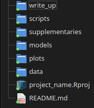

Organising Shareable R Projects
Some advice for organising code for projects in linguistics using RStudio.
here package.
The Problem
A complex research project can easily get out of hand organisationally. Sometimes we end up with multiple folders with different data sets, models, plots, scripts, and R Markdown files. This can become deeply confusing as we work. We want our projects to be well structured.
We also want our work to be shareable. Often newcomers to R produce files which depend on their own directory structure. A tell tale sign is a line of code like: my_data <- read_rds('/home/jane_doe/Documents/my_project/data/third_attempt/data_2.rds). This will cause problems for anyone trying to run the code on a different computer.
The demand for well structured and shareable projects is doubly true if we want to make our data and analysis public by means of a GitHub or GitLab repository.
Having read a few blog posts and text book sections, I’ve ended up fixing on the following set up for my projects at NZILBB. This post assumes you are using RStudio.
Directory Structure
The structure I recommend looks like this:
project_name
| README.md
| project_name.Rproj
|
└─── data
| | raw_data.csv
| | processed_data.rds
| | ...
|
└─── supplementaries
| | preprocessing.Rmd
| | modelling.Rmd
| | ...
|
└─── presentations
| └─── conference_name
| | presentation.Rmd
| | ...
|
└─── write_up
| | write_up.Rmd
| | ...
|
└─── scripts
| | anonymisation.R
| | ...
|
└─── models
| | model_name.rds
| | ...
|
└─── plots
| data_distribution.png
| model_predictions.png
| ...
The names of the files inside the folders above are illustrative examples.
In a file explorer, It’ll look like this: 
The idea is to have a folder for each project. Within that folder, you will always have a data folder within which you should store all of your data files. Sometimes I distinguish between a raw data folder and one with data which has been processed as part of the project. This is not necessary though.
The majority of the R code which you will create will be in the supplementaries and scripts folders. I like to keep these separate, rather than having a single scripts folder for all .R and .Rmd files. This is because I tend to end up with lots of small scripts which respond to small projects which occur in the course of a project or which are prototypes of an analysis which will eventually appear in an R markdown document. The scripts folder can hold this, potentially messy, material. The supplementaries on the other hand, will be the main R markdown file containing the analysis code and any descriptions needed for someone to make sense of the steps you have carried out.
The R markdown files in the supplementaries folder will likely include much more than you report in any papers you produce from the project. In order to avoid unwieldy R markdown files which take a long time to knit, I like to have a distinct file for each major step in the project.
We often save plots in the course of our analysis. It is useful to have these in a plots folder. These can then be independently shared or used with other programmes.
In projects which handle large data sets, it is often wise to save any models we have fit to the data. These models can sometimes take hours to fit. This avoids wasting time refitting models. We put these files in the models folder.
The remaining folders in the structure above are optional. I often create presentations using the Xaringan or ioslides packages. I store these in a presentations directory. Sometimes I include a write_up folder for any journal articles or other written outputs which might come from the project.
within the project folder, you should have a file called README.md. This is a markdown file which should explain what your project is, where things are stored within the project, and how the project can be interacted with. If you use GitHub or GitLab, the content of this file will be the first thing that any potential user will see of your project.
What about the project_name.Rproj file? We’ll turn to that now.
R Project Files and the here Package
The main problem which R project files and the here package solve is file path management.
There are two options for starting a new project in RStudio: starting a project in an already existing directory or by creating a new directory. Both options will be given to you if you open RStudio and click the ‘project’ button at the top right of your screen and select ‘New Project…’. Either option is perfectly fine.
Once you have created a project you should see the name you have chosen at the top right of the screen. Your project folder, whether it already existed or you just created it, will also have a file with your project name and the extension .Rproj. This is the R project file. You can use this to open your project (just double click on it).
Once the project is opened, your working directory will be the project folder. This is already an improvement on getting and setting working directories with absolute file paths at the start of an R script. Anyone you send the project to will, if they open through the project file, be in the right place on their own machine to run your code. If you use relative file paths, this is a big improvement. That is, if you use e.g. read_csv('data/my_data.csv') from an R script in your project folder, this will work for anyone who you share your project with.
The here package takes us even further, though. As Jenny Richmond sets out, working directories work a little differently for R scripts and R markdown files. If you have a script and an Rmd file in project_name/markdown, the working directory for the R script will be the project folder, while the working directory for the R markdown file will be project_name/markdown. This means, for instance, that code which works in your markdown file will not work in the R console. It’s also something which you would have to keep in your head when moving between R scripts and R markdown files. This is not the kind of thing you want to be worrying about.
If you load the package here when working in a project, you can refer to files within your project in a consistent way which does not depend on anything specific to your own computer. For example:
library(here)
my_data <- read_csv(here('data', 'my_data.csv'))This code will load the package here, which looks ‘up’ the directory structure until it finds the R project file. We then use the function here to refer to files within our project. The arguments to here are either folders or files. A number of arguments specifying folders are followed by an argument with the name of the specific file to be loaded. In this case, 'data' is the first argument, which says we are looking in the data folder inside our project folder. The second argument, 'my_data.csv' says that we are looking for a file with that name inside the folder specified by the previous argument.
To belabour the point a bit: if the file we want to load is two folders deep, say, the file my_data.csv is inside a folder called data_source_1 which is in turn inside out data folder, then we would use here('data', 'data_source_1, my_data.csv). You can have as many arguments as you like when using the here function.
A final note: in a footnote to the here package documentation it is suggested to avoid library(here) and instead use here::here() whenever you use the here function. I can see that this avoids clashes with the here function in the plyr package, but I don’t see this as likely to come up in any of my work or in NZILBB projects.
Futher reading
- Bodo Winters, Statistics for Linguists: An Introduction Using R
- See Chapter 2, which covers the core
tidyversepackages with a worked example from linguistics and introduces a folder structure similar to the one suggested here in Section 2.8. Winters doesn’t cover theherepackage.
- See Chapter 2, which covers the core
- Hadley Wichkam, Advanced R, Chapter 8 Workflow: Projects.
- Some advice for setting up Rstudio to encourage good habits and reasons for using R projects to organise code.
- Jenny Richmond, ‘how to use the
herepackage`’ - Malcolm Barrett, ‘Why should I use the here package when I’m already using projects?’
If you want to know more about Git and Github for code sharing and version management check out Happy Git and GitHub for the useR